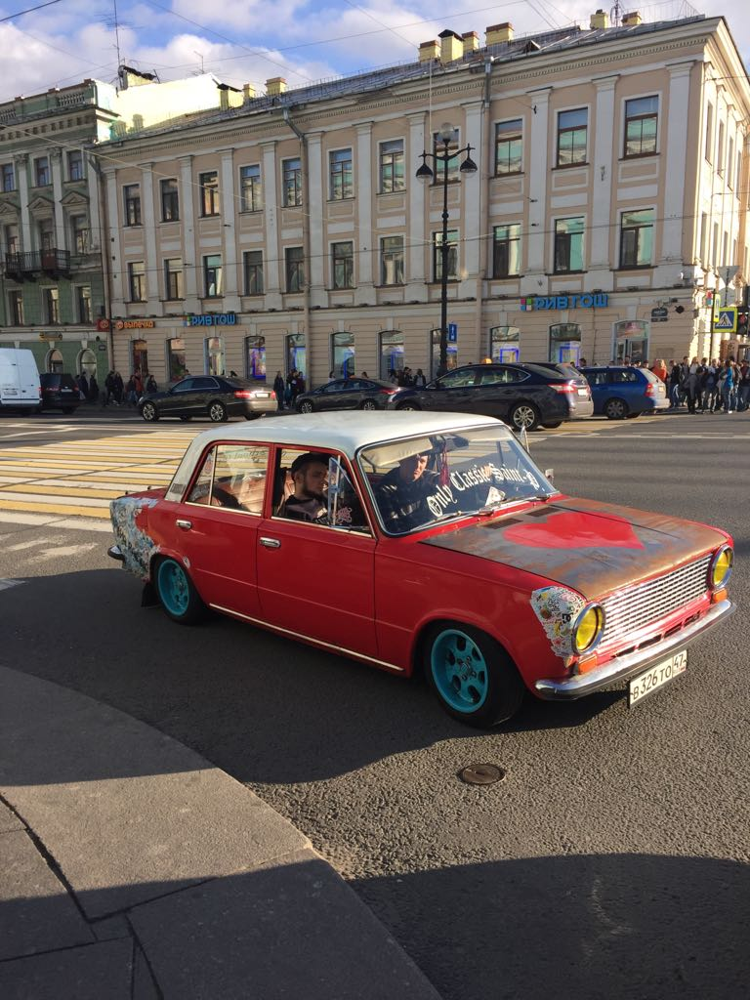
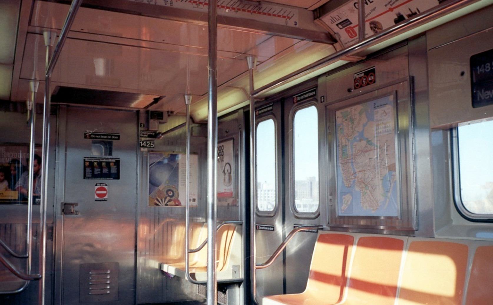
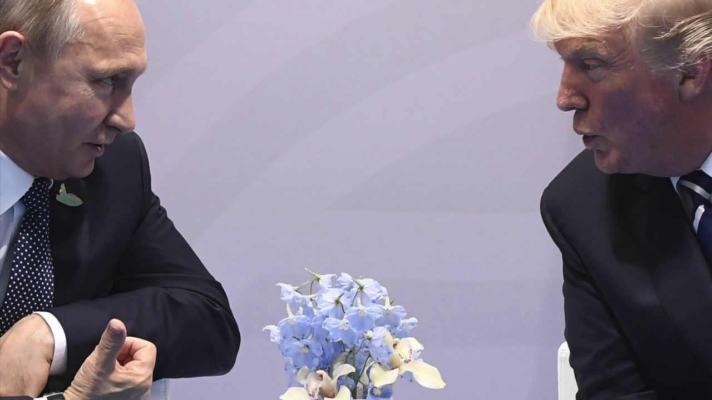

She's in Russia
The Cold War ended in 1991. Now its looming specter has returned to US and Russian politics and media. On this podcast two best friends -- one in St. Petersburg and one in Brooklyn -- address this situation the way they like best: by talking.
Since late 2013, with the start of what’s now referred to as the Ukranian Crisis, the US and Russia have been engaged in a state of tension and information warfare, sometimes referred to as Cold War II. The recent US-based intrigue and investigation into the relationship between Putin, Trump and some not so anonymous hackers (#FancyBear) has increased tensions and hostility to a fever pitch, most notably in the politics and media of the American Left.
In the US, a deep-seated aversion to what ‘Russia’ represents, which lay briefly dormant since the fall of the Berlin Wall, has reared its ugly head, and this time its mouthpiece is Liberal. In Russia, politicians in power and State-run media more often than not hold an unabashedly anti-Western position, encouraging knee-jerk nationalism and resentment of the US, its allies, and all that it represents.
This podcast is an ongoing attempt to push back against the above tendencies. To talk about the relationship between these two nations in a way that is nuanced, thoughtful, emotional, sometimes funny, and rooted in a healthy combination of research and real-life experience.